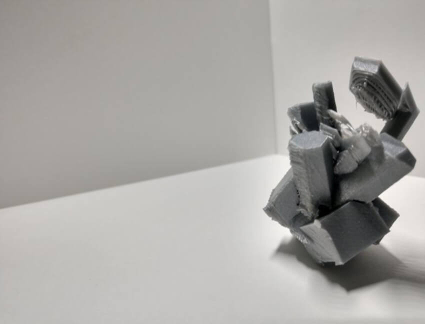

Title: Hero's Journey
Image size: 1200x800 px
Medium: Photoshop
The logic that makes up for my use of my content is the deep archetypal myths and their motifs on how they relate to being. This content shows the myth of the hero venturing to defeat the tyrant. Bringing chaos into order. The reuse of the content enhances the historical context of myths in the source material. The ruined picture of Rome symbolizes the fall of order into chaos. The pyramid from the dollar bill shows order, but it's about to be destroyed and brought down into chaos by the tyrant: depicted as a dragon. The hero is shown as the knight prepares to restore order by slaying the dragon. Another mythological motif, the eye which on top of the pyramid symbolizes how important and the capacity to pay attention and to not ignore individual responsibility. Taking voluntary act to face chaos forthrightly, confront courageously, growing stronger, and reinstate internal or external order, becoming a hero the process. I think my work will live online, on image boards, or printed maybe.
Title: Collective Hero
Medium: paper collage
Modified: 1563x2048px
The Collective Hero. The work has various containers of fragmented pieces of heroes throughout history to today: Superman, Thor, Hercules, Marduk, Thot, and Saint George. Each piece representing traits of the archetypal hero. When translating the work, I wanted to modify the aspects of color and placement of the pieces in the original work. The pieces heroes in black and white to symbolize old historic age, while the other pieces in color to symbolize a current relevance to today. After I printed it out, a collage was made on paper. This act of translation enhanced the meaning on a play of history on the traits archetypal myths of heroes. The foundations of the old mythological heroes in black and white; giving structure to the colored heroes today, having each color pieces in relief to let the black and white pieces to stand out. To what happens when we convert jpegs, pngs, mp3 into another format, I think the file gains more context when it is converted. I learned about file types and their process in the change of meaning as the file gets converted into another file type. This was quite the challenging process, expanding through the old and new.

Title: As Above, so below
Medium: Photoshop
Modified: 1563x2048px
As Above So Below is a collage made up images from contemporary world and images from the arcane world. An exploration into this haphazard world. Going through the world differently. The piece was completely based on symbols from alchemy. To offer a re-entering of another way of exploration, all of these materialized. Revealing embedded layers of reality, the rocket flying into space fueled by monsterly arcane science; archangel Michael separating the world into two, while wearing a VR headset; and the world itself becomes reshaped among these invisible things we name ideas.
Title: Glass Case
Medium: Maya
Size: 6.6 MB
Glass Case is a virtual installation piece rendered in Maya. The viewer enters a glass labyrinth to find their way to the golden flower. As one enters a museum, they see an object displayed within a glass case. Which the viewer becomes the subject. Re-entering the world within the object housed in a labyrinth of glass experiences‒ translucent reflection, fragile transparency, and seeing through invisibility allows visibility‒ an emphasis on glass as material. In a darkened room with only light hitting the object in the center; as the viewer walks through the properties of glass one becomes hesitant and a slowing takes place. The lighting focus on that vase flower to be seen from anywhere within the labyrinth. The mind becomes blurred‒‒ losing itself in many observations in seeing through the object in the center. The glass separates observer from observed it is until the viewer reaches the object and it truly becomes noticed.

Title:Glitched Crystal
Medium: 3D print
Dimensions: 2inchs by 1 inch
Glitched Crystal was originally emphasize the plastic, with its thin layers, giving a crystalline translucently. Although as the virtual piece was being manifested through plastic. I noticed errors during the process. The ultimaker was flying over empty spaces and extruding the filament. I decided to keep those errors going to see the unpredictable, ended up better than my original idea. With those errors it seemed interesting, as the virtual object was translated into physical material. The errors within technology, but it would look like an anomaly in nature. I learned about 3D printing, it was engaging and accurating process. I wanted to expand on how things are processed in relation of nature and 3D printing. The challenging part was to decide if I should start over or continue with the 3D print.
Title: Still Life
Medium: Maya
Length: 32 seconds
Still Life is an animation was inspired from still life paintings on the aspect of practice. I looked As I looked back at still life paintings then back to the animation, I get the feeling of repetition from the constant movement of the objects. Each object enters the scene from different spaces, adding into the scene, giving a narrative gesture. The animation felt both natural and artificial. The artificial set up of the gestural objects onto the scene and then natural still life after the movement, as if the objects are painting the scene itself.
Title: What is the Truth?
Medium: Video
Size: 500.4
What is the Truth is a video project based on online political discourse, on the topic of guns. With the vast amount and various forms of information that surrounds the important issue of gun control, how does one find truth in media today? Do we find it by simply watching the news, or by reading it in memes on social media? How can we filter through all of the content available to us, to get to the core meaning of an important issue? Discussions on important issues become lost and twisted, words caging themselves in ideological bubbles. Both the music in the piece remixes these depictions on the political spectrum to reveal the bigger picture.
Title: Logging Off
Image size: 5400x7200 px
Medium: Maya
This animation reflects my long hours spent on the computer. The animation(fig.5) is made up of two characters, the landscape and the avatar. The avatar is the virtual self and the landscape is my physical self. The conceptual framework of the piece reveals itself in the animation; chair and statue. The avatar gestures logging off, walking towards the chair and then to fly away. Physically, to get off the chair and walk away. The need of an animation, from my perspective, is to create a metaphorical space to reach the viewer. Different from traditional video, animation allows more possibilities, unbounded by reality. I relate this piece to contemporary culture is full of digital adverts, commercials featuring CGI, but behind the process someone edited advert, created a CG model, animated CG avatar.
Title: Gossamer
Medium: Maya
Size: 679 × 382
Inspired by nature, the project is a 3D model silk cocoon. Originally, I wanted the model to be 3D printed but delaying got the best of me. For it is 3D printing that weaves this cocoon. I return to my inspiration, nature, to think about how nature creates these wondrous beings in intense processes. Technologically, I wanted to take part in a process. I felt myself cheating nature, but also becoming more aware of how things are created by nature and/or technology. This piece is a synthesis of these two forces. While making this piece I thought about how bringing it into the world through 3D printing made me feel cheating nature in reality at most(which made me felt horrible). Things take time to grow and form, an intense process. A boulder evolving over millions of years to become a crystal. While making the cocoon, I felt like I was weaving the threads the form of data.
Title: Phantasmagoria
Medium: Maya
Modified: 960 × 540
Phantasmagoria, the word means a series of real or imaginary images related those perceived in a dream. To have a further exploration prosthetic, we strike to its etymological roots. The Greek word, prostithenai, pros means “towards” and tithenai means “to put or to place.” This prosthetic brings the user toward to the place of dreams. The prosthetic augments the neurological components and biological components within the body. The stimulation of nerves will give the user a conscious experience similar to that of lucid dreaming. This functions also as a tool for psychologist, recording and interpreting dreams. This hand in hand, conscious explorations within realms of dreams and dream analysis will enhance the users psyche. I learned just the basics about Maya to model. It was interesting to 3D model the piece, to see it formed within the screen. The process of modeling was challenging was start to finish, since it’s the first time I touched Maya. I created it with a growing interest in the interpretation of dreams, it is usually done by professionals in the field, but I want to extend this further with technology.